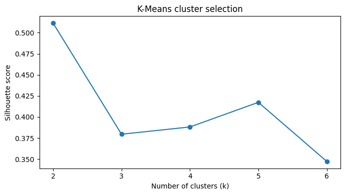
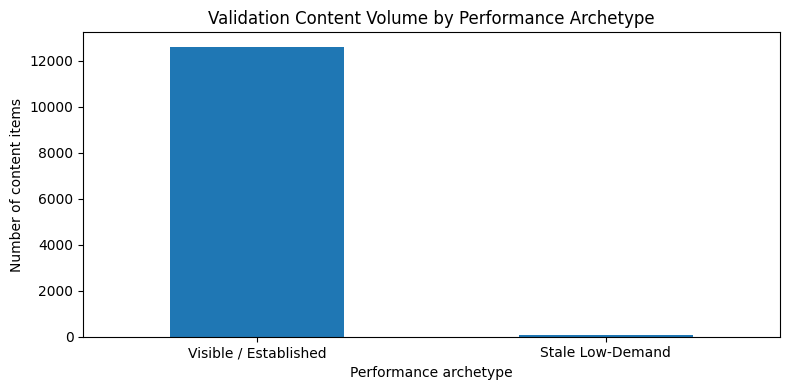
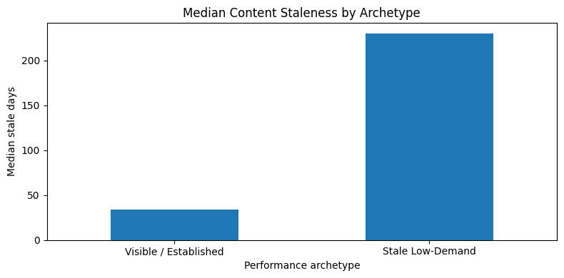
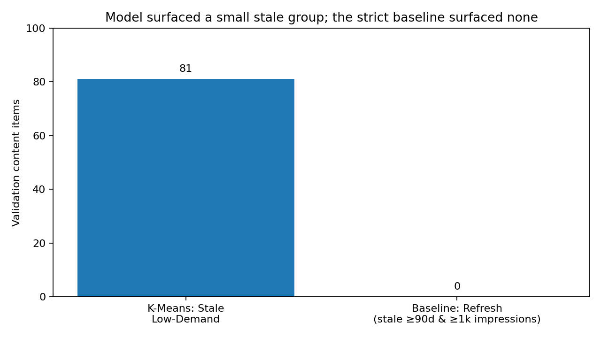

A compact answer to the research question
This study asks what recurring performance archetypes exist across a large content inventory using structured search-performance and freshness signals. Using the March 2026 FlyRank internship warehouse snapshot, we aggregate content-level observations and apply K-Means clustering to impressions, clicks, click-through rate, average search position, and content staleness. A client-grouped holdout separates 26 training clients from 7 unseen validation clients, and the selected two-cluster solution reaches a validation silhouette of 0.6875. On the same held-out rows, K-Means surfaces 81 of 12,688 items (0.64%) as a stale/low-demand archetype, whereas the stricter stale-and-visible baseline surfaces none for refresh. The result is a descriptive decision-support framework for human review—not evidence of causal refresh impact, semantic content type, or business value.
The decision behind the analysis
Large content inventories make it difficult to decide where human review should begin. A transparent rule can flag pages that are both old and visible, but it can miss a different population whose strongest observed signal is staleness combined with low exposure.
What performance archetypes exist across the content inventory?
The unit of analysis is a client-content pair aggregated over March 2026. The output is an interpretable cluster assignment plus a review-prioritization framework. A wrong call can waste editorial effort or cause a useful page to be changed unnecessarily, so the output is intentionally decision support rather than an automated action.
One month, two tables, 27,886 observations
Tables used
fact_content_daily_performance supplies daily search-performance observations. dim_content supplies content_updated_date, used to derive stale_days.
Public-safety exclusions
No client names, raw URLs, article titles, private queries, proprietary text, or private business information are published. Hashed identifiers are used internally for grouping and validation only.
| Split | Rows | Clients | Purpose |
|---|---|---|---|
| Training | 15,198 | 26 | Fit scaler and K-Means |
| Validation | 12,688 | 7 | Held-out transfer check |
Learn structure, then test it on unseen clients
Feature representation
- March GSC impressions
- March GSC clicks
- GSC click-through rate
- average search position
- content staleness in days
Impressions and clicks use log1p. All features are standardized using training-client parameters only.
K-Means
Candidate k=2…6 values were assessed with training silhouette. The strongest stored-run value was k=2.
random_state=42 · n_init=20
Validation design
A GroupShuffleSplit holds out entire clients (20%, random seed 42). No client appears in both training and validation. The validation model is applied without refitting the scaler or K-Means model.
Leakage controls
Only the March 2026 snapshot is used. No future performance outcome is used. There is no prediction label in this unsupervised task, and identifiers are never model features.
The obvious rule and the learned archetype see different pages




Model vs baseline: an honest comparison
The Week-4 baseline selects a page only when it is at least 90 days stale and has at least 1,000 March impressions. Both frameworks are evaluated on the same 12,688 held-out rows.
Because K-Means has no ground-truth outcome label, predictive accuracy, precision, AUC, or lift would be misleading. The fair comparison is operational coverage: what each framework surfaces and how their selections differ.
| Framework | Held-out items surfaced | Share | Interpretation |
|---|---|---|---|
| K-Means · Stale Low-Demand | 81 | 0.64% | Learned archetype with low exposure and high staleness |
| Week-4 baseline · Refresh | 0 | 0% | Strict stale + visible rule |
This difference does not establish that K-Means is “better.” It shows that the two decision-support lenses have different coverage on the same held-out clients.
What this analysis cannot prove
- Descriptive, not causal. Clusters do not show that refreshing content causes better performance.
- Not semantic. No article text is used, so clusters do not represent topic, meaning, or content quality.
- Rare archetype. The Stale Low-Demand group contains only 81 validation observations.
- One-month window. The main model uses March 2026 rather than a long longitudinal history.
- Exposure is not business value. Impressions do not directly measure revenue, conversions, strategic importance, or editorial value.
- Missing context. The model cannot judge factual accuracy, intent alignment, content quality, or editorial appropriateness.
- Cluster uncertainty. Boundary cases should be reviewed manually.
- Validation scope. Client-grouped validation is stronger than a random page split, but does not guarantee future stability.
- Strict baseline. The baseline selected no held-out pages in the stored run, so it is mainly a useful contrast for this validation composition.
Turn patterns into a human-review playbook
Review stale pages with meaningful visibility
Start with pages at least 90 days stale that still receive measurable search exposure. Treat them as plausible refresh candidates, not guaranteed wins.
Diagnose very stale, low-demand pages before investing heavily
Use the Stale Low-Demand archetype as a diagnostic queue. Check topic demand, strategic value, and editorial context before investing.
Maintain established pages unless another signal indicates a problem
The Visible / Established archetype generally has stronger observed exposure and lower staleness, so monitoring is preferable to automatic rewriting.
Manually inspect uncertain assignments
Pages close to the learned cluster boundary should be reviewed by a person.
Revalidate over time
Rerun the clustering and action rules on later snapshots; track distribution drift, cluster stability, missingness, and human-review overrides.
All recommendations are decision support, not automated production actions.
Inspect the work, then rerun it
The full analysis lives in the repository. The capstone notebook is the primary narrative implementation; the supporting notebooks document the baseline, model, validation, and action-playbook work.
Reproduction settings
March 2026 snapshot · K-Means k=2 · random_state=42 · n_init=20 · client-grouped validation · log1p on impressions/clicks · training-only standardization.
Data credit
Built on the FlyRank ML Internship dataset. Data is used according to the internship's data-use rules and presented here in a public-safe, anonymized form.